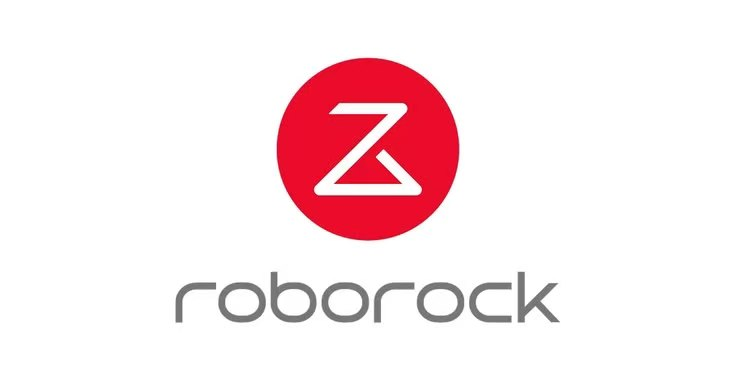
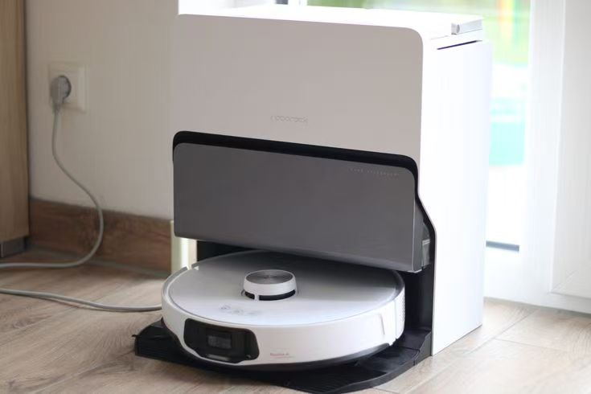

Independent Case Study Public Information ResearchBuilding Overseas Regional GTM,
One Market at a Time
How a Chinese smart-home brand assembles product, price, channel and trust differently in each overseas market — North America, Europe and APAC. Same brand, three different GTM systems.
Independent research based on public sources (annual reports, IDC, Reddit/Amazon/YouTube samples). Not Roborock internal data; no affiliation. Roborock is listed on the Shanghai Stock Exchange (SSE: 688169).
Case Snapshot
Roborock — regional GTM of a Chinese smart-home brand
North America · Europe · APAC
Market · Product · Price · Channel · Content · Trust & Service
How to build differentiated, durable overseas growth?
One Brand, Three Regionalized GTM Combinations
Roborock does not rely on one uniform global playbook — lead products, price bands, channel structure and content differ market by market.
Differentiation concentrates on the commercial side; the trust layer (warranty, after-sales, reliability) shows less regional variation.
For premium, high-consideration hardware, product earns consideration — but trust infrastructure may decide how long the premium lasts.
Localize the full GTM system — not just the product and channel.
Core Thesis
Roborock's overseas growth is driven by regionalized combinations of product × price × channel × content — yet its long-term durability also depends on whether trust & service are localized in step.
Observed: materially different product emphasis, price positioning, channel structure and content approach across markets. Tension: the commercial side is regionalized; the Service × Reliability × Trust layer does not show the same degree of localization (warranty baselines comparable to peers, recurring service friction in sampled discussions). Caveat: a growth mechanism inferred from cross-market evidence; public data cannot quantify causal contribution.
One Brand, Three Market Systems
The difference is not whether to localize, but how deep localization goes.
North America
Mature, high-consideration. Flagship-led (Saros Z70). High list + frequent promos. DTC + Amazon + retail (Target 1,398 / Best Buy 900 stores). BF NA Amazon robot-vacuum share ~40%.
Trust harder testEurope
Fragmented, country-specific. #1 in DE/FR/Nordics/Turkey/KR. AI/premium messaging, recycling pack. Per-country distributors + EU store + Amazon.de. Sports-celebrity (Mörk) + stunt events.
Framework + country execAPAC
Country-differentiated. KR 70%+ online; JP quiet mode; AU AUD ladder; SEA via Shopee/Lazada/TikTok. Local humor, live commerce, regional ambassadors.
Most localizedEvidence: A07 · A11 · A12 · A14 · A17 · B08 · B13 · B15 · D08 · D13 · D16 · E08.
Premium Wins on Product — Trust Is the Weak Link
Layer 1 · Product Value
- Time-saving, automation, editable maps, self-cleaning
- Buyers pay to offload the cleaning task, not for higher specs
Layer 2 · Trust Friction
- Recurring durability / after-sales / warranty / reliability concerns
- Concentrated on US Amazon, repeated in AU & CN
Roborock and direct competitors sit in a similar band — ~1-yr limited + ~30-day return (Roborock US, iRobot, eufy, Ecovacs, Shark; Dreame 2-yr in some APAC). Roborock's right-to-repair stance is a marginal differentiator. Note: parity in trust baseline + recurring market-specific friction = a durability risk, not a proven bottleneck (overseas revenue still grew +63% in 2025).

Content & Creator as a Regional Mechanism
Creators map to decision stages: pet/lifestyle/entertainment for reach, tech reviewers for pre-purchase credibility, regional creators / live commerce for cultural fit and local trust.
Discovery
Reach beyond appliance audiences
Consideration
Tech reviews, comparison
Local Trust
Cultural fit, live commerce
Data limit
CAC / ROAS / attribution Unavailable
Creator Pool Built by Decision Role
Pet / lifestyle / entertainment
@tuckerbudzyn (~5.1M) · @nicocaponecomedy (~24.7M) · @justadadvideos (~52.4M)
Tech reviewers
Linus Tech Tips · Vacuum Wars · MKBHD · Chris Majestic · Danny Winget · PP World
Regional & live commerce
Taiwan brand ambassador (C20) · Vietnam localized humor live-commerce (~3.1M)
Three tiers, not one roster
Different creators fill different gaps the product alone cannot.
From Market Differences to Growth
DATA UNAVAILABLE: CAC · ROAS · Retention · regional revenue contribution · creator-attributed revenue.
If I Were the Overseas Operator
P1 · Trust localization
Fold after-sales ownership, warranty communication and local service into regional GTM planning — not a post-launch patch.
P2 · Keep offline trust
Retain physical retail (Target/Best Buy NA; clarify EU service ownership) as evaluation & trust touchpoints.
P3 · Role-based pools
Structure creator pools as Discovery / Consideration / Local-trust tiers, not one flat KPI roster.
Key Evidence — Public Facts
Each chip = a public evidence item (R5). Platform types: Official · Third-party · UG (user-generated) · Marketing.
Takeaway
Localize the entire GTM system — not just the product and channel.
The trust layer (warranty, after-sales, reliability) has not been localized to the same degree — a durability risk for the premium position, not a proven current bottleneck (overseas revenue still grew +63% in 2025). Treat trust localization, offline trust touchpoints and decision-stage creator pools as first-class, planned GTM work.
Product specs · price (time-tagged) · channel structure · public social · sampled discussions · competitor context
Regional revenue contribution · CAC/ROAS · conversion · retention · creator-attributed revenue · per-country share